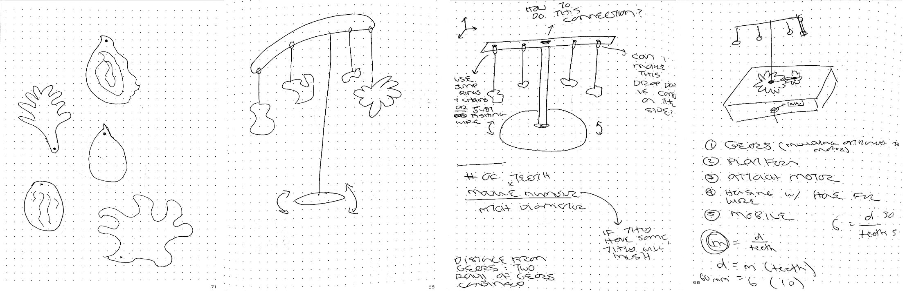

<div class="textcontainer">
<p class="margin"> </p>
<h1>🪚 Week 3: Hand Tools and Fabrication 🪚</h1>
<br></br>
<h2>Part I: Kinetic Sculpture</h2>
<br></br>
<p>For my kinetic sculpture, I set out to create a mobile-inspired art piece, drawing on the abstract, organic, and colorful acrylic forms I’ve admired in existing decorative pieces I've seen.</p>
<img src="Moodboard.png" alt="Moodboard" class="center">
<p style="text-align: center;"><em>Inspiration for this week's project!</em></p>
<p>Specifically, I wanted to design a rotating mobile on a stand, with hanging acrylic ornaments evoking the natural beauty of the United Arab Emirates, where I lived before starting grad school. Each form represents an iconic element of the UAE’s landscape: a palm frond, a date fruit, the sun, a wave, and an oyster.</p>
<br></br>

<p style="text-align: center;"><em>Early sketches ...</em></p>
<br></br>
<h3>Mechanism Design</h3>
<p>I began with the rotating mechanism. After consulting with Bobby, I settled on a two-gear structure: a smaller gear attached to the oblong motor shaft powering a larger gear, which would carry the mobile. Using Fusion’s Spur Gear tool, I designed gears that meshed properly and built a housing to secure both the gears and motor, projecting holes aligned with the motor’s so I could fasten everything with nuts and bolts.</p>
<p style="text-align: center;"><em>CAD model of motor, gears, and platform</em></p>
<p class="margin"> </p>
<div class="flexrow">
<a id="btn" href="Kinetic Sculpture Fusion.f3d" download>Kinetic Sculpture Fusion Files
</a>
</div>
<p class="margin"> </p>
<br></br>
<h3>First Prototype and Fixes</h3>
<p>My first laser-cut plywood prototype revealed several issues, which I iterated on:</p>
<ul>
<li><p class="p1"><strong>Large gear not suspended properly</strong></span> → Added spacers to hold it at the right vertical height to mesh with the small gear.</li>
<li><p class="p1"><strong>Motor not sitting flush</strong></span> → Cut a square hole in the platform for the motor’s protrusions so it could sit flat.</li>
<li><p class="p1"><strong>Small gear hitting a motor nubbin</strong></span> → Elevated it with three stacked washers, lifting it higher on the z-axis.</li>
<li><p class="p1"><strong>Motor shaft hole too tight</strong></span> → Initially cut to the exact size of the oblong motor shaft, it left no room for rotation. I drilled it out manually to give the shaft clearance.</li>
</ul>
<p>With these adjustments, the gears rotated together smoothly: exactly the validation I wanted at this stage of the process.</p>
<div style="text-align: center;">
<video width="480" height="360" controls>
<source src="IMG_4054.mp4" type="video/mp4">
Your browser does not support the video tag.
</video>
</div>
<br></br>
<h3>Ornaments & Frame</h3>
<p>Next, I created the mobile frame using a dowel and a small stick of wood. I sketched and cut cardstock prototypes of the ornaments, attaching them with fishing line (special thanks to my sister for the surgeon’s knots!). This part was straightforward and gave me useful insights for refining the ornament designs in the next iteration.</p>
<div style="text-align: center;">
<video width="480" height="360" controls>
<source src="IMG_4146.mp4" type="video/mp4">
Your browser does not support the video tag.
</video>
</div>
<div style="display: flex; justify-content: center; gap: 20px;">
<img src="IMG_4154.jpeg" alt="Image 2" style="width:300px;">
</div>
<br></br>
<h3>Next Steps (v2)</h3>
<p>I’d like to continue developing this project during the microcontroller and 3D printing weeks to transform it into a fully polished art piece. Key improvements on my list include:</p>
<ul>
<li><p class="p1">Designing a more robust housing that conceals the yellow motor</li>
<li><p class="p1">Refining ornament shapes in Illustrator, cutting them from colored acrylic, and deciding whether to engrave details or keep them minimal</li>
<li><p class="p1">Using brass chains and jump rings to attach the ornaments more securely</li>
<li><p class="p1">Reconsidering the frame construction—should I stick with wood (which pairs nicely with colored clear acrylic) or build it entirely from acrylic for consistency?</li>
<li><p class="p1">Incorporating microcontrollers for an on-off switch and a well-constructed speed/direction control dial</li>
</ul>
<p class="p3"> </p>
</div>